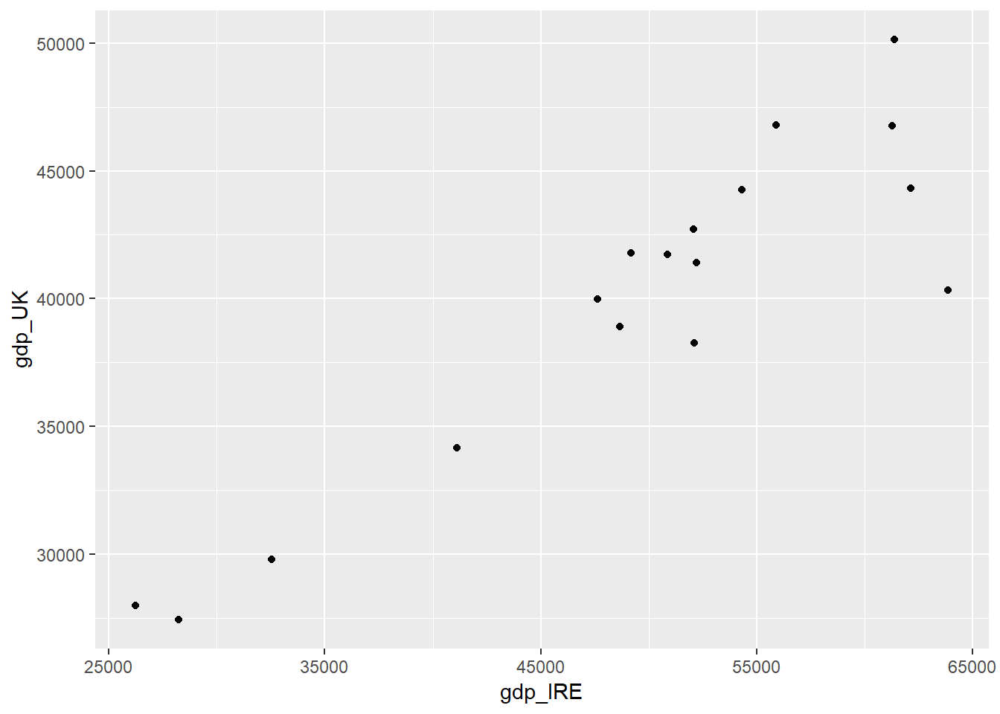
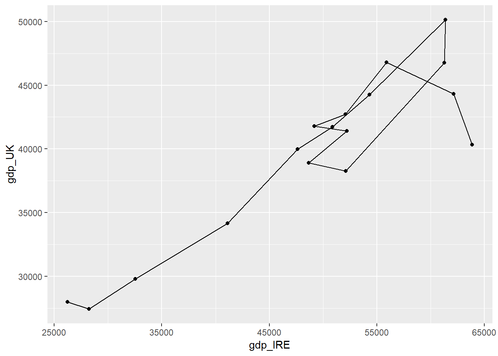
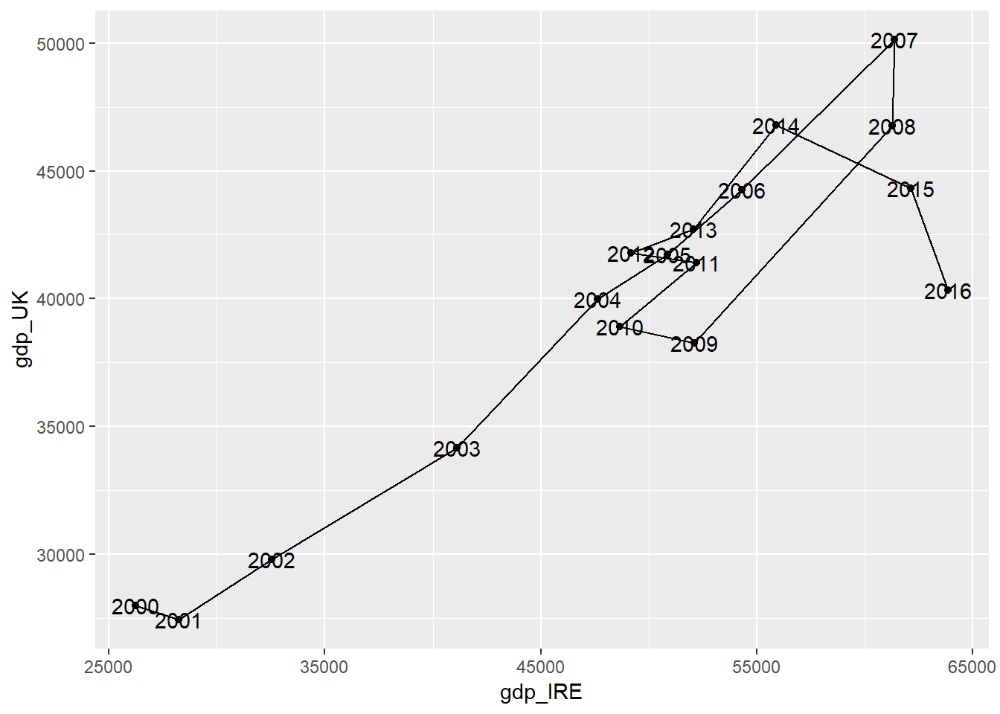

Chapter 7 Merging datasets
7.1 Set Up for Session
In this session, we are going to use the following packages; dplyr, ggplot2, openxlsx, tidyr, plotly. If you get an error saying there is no package called _____, install the package as covered in the first tutorial.
library(dplyr)
library(ggplot2)
library(openxlsx)
library(tidyr)
library(plotly)We have used the following datasets in this tutorial. Import them as covered in the previous tutorial UKIreland.csv, UKIreland.xlsx, UN_LivestockData.csv, WorldBankData.csv
7.2 Binding
After sucessfully loading the datasets, there should be seperate data frames of the UK data and Ireland data that we used in the previous tutorial. Ideally we would like to combine these together into a single data frame.
In this case the two data frames have the same structure; the columns are the same, the column names are the same and there are the same number of rows (one for each year).
We can use the rbind() function to merge the data frames together. rbind() attatches the rows of the second data frame below the first data frame.
UKIreland<-rbind(UK,Ireland)rbind() only works because the UK data has the same columns as the Ireland data. For example, we will get an error if we had calculated a new column in one dataset but not in the other:
UK2 <- mutate(UK,pop_mill=population/1000000)
rbind(UK2,Ireland)## Error in rbind(deparse.level, ...): numbers of columns of arguments do not matchThere is also a function called cbind. This binds the columns together.
UKIreland2<-cbind(UK,Ireland)cbind() will only work if we have the same number of rows in each data. cbind also produces a slightly confusing dataset - we now have two sets columns called “population”, “country” and so on; this makes it very difficult to work with!
rbind() is used often but cbind() is not since to be useful the two datasets need to have the same number of rows with each row describing the same thing. There are more functions to allow more flexible types of merging of datasets.
7.3 Introducing merging
dplyr has a number of clever functions for merging data.
| Join function | Description |
|---|---|
full_join() |
merges two datasets and keeping all observations from both datasets |
inner_join() |
merges two datasets and only keeping the matching observations |
left_join() |
merges two datasets and keeping all observations from the first (“left”) data set but only the observations that match from the second (“right”) data set |
right_join() |
merges two datasets and keeping all observations from the second (“right”) data set but only the observations that match from the first (“left”) data set |
anti_join() |
identifying rows present in the first (“left”) dataset which do not have a match in the second (“right”) dataset. |
We will work through these sequentially. The function for merging all the data is full_join. The key identifier column between UK and Ireland would be the “date” column.
full_join(UK,Ireland,by="date")## country.x date gdp.x population.x unemployment.x capital.x
## 1 United Kingdom 2000 27982.36 58892514 5.450000 London
## 2 United Kingdom 2001 27427.59 59119673 5.083333 London
## 3 United Kingdom 2002 29785.99 59370479 5.175000 London
## 4 United Kingdom 2003 34173.98 59647577 5.008333 London
## 5 United Kingdom 2004 39983.98 59987905 4.750000 London
## 6 United Kingdom 2005 41732.64 60401206 4.841667 London
## 7 United Kingdom 2006 44252.32 60846820 5.416667 London
## 8 United Kingdom 2007 50134.32 61322463 5.333333 London
## 9 United Kingdom 2008 46767.59 61806995 5.708333 London
## 10 United Kingdom 2009 38262.18 62276270 7.608333 London
## 11 United Kingdom 2010 38893.02 62766365 7.891667 London
## 12 United Kingdom 2011 41412.35 63258918 8.091667 London
## 13 United Kingdom 2012 41790.78 63700300 7.991667 London
## 14 United Kingdom 2013 42724.07 64128226 7.591667 London
## 15 United Kingdom 2014 46783.47 64613160 6.200000 London
## 16 United Kingdom 2015 44305.55 65128861 5.375000 London
## 17 United Kingdom 2016 40341.41 65637239 4.900000 London
## country.y gdp.y population.y unemployment.y capital.y
## 1 Ireland 26241.51 3805174 4.266667 Dublin
## 2 Ireland 28227.28 3866243 3.925000 Dublin
## 3 Ireland 32539.95 3931947 4.491667 Dublin
## 4 Ireland 41107.03 3996521 4.616667 Dublin
## 5 Ireland 47630.93 4070262 4.491667 Dublin
## 6 Ireland 50878.64 4159914 4.400000 Dublin
## 7 Ireland 54306.91 4273591 4.525000 Dublin
## 8 Ireland 61359.64 4398942 4.691667 Dublin
## 9 Ireland 61257.90 4489544 6.433333 Dublin
## 10 Ireland 52104.04 4535375 12.050000 Dublin
## 11 Ireland 48671.89 4560155 13.908333 Dublin
## 12 Ireland 52224.01 4576794 14.675000 Dublin
## 13 Ireland 49177.44 4586897 14.725000 Dublin
## 14 Ireland 52060.47 4598294 13.091667 Dublin
## 15 Ireland 55899.16 4617225 11.316667 Dublin
## 16 Ireland 62139.67 4676835 9.458333 Dublin
## 17 Ireland 63861.92 4773095 7.908333 DublinNotice that instead of duplicated names for the columns, we now have a suffix .x and .y. It might be useful to have a more informative suffix so that we don’t have to constantly remember which country is x and which country is y.
full_join(UK,Ireland,by="date",suffix=c("_UK","_IRE"))QUESTION: In the previous chunk what we would expect to see if we were to replace full_join() with inner_join()?
7.4 Applying merging
7.4.1 Piping into ggplot (+ some new geoms)
We could now make a plot of GDP in Ireland against GDP in UK. We can pipe data into a graph in a similar way to piping data commands that we saw yesterday.
full_join(UK,Ireland,by="date",suffix=c("_UK","_IRE")) %>%
ggplot(aes(y=gdp_UK,x=gdp_IRE)) +
geom_point()
Remember that once we have started the ggplot() we use the + to link together the components of the graph. The %>% is used to make modifications to the data.
We can also assign our plots to be named objects, similar to how we have named data frames so far. This can be a good way of sequentially building up a plot. But to actually see the plot we need to repeat back the name.
plot1<-full_join(UK,Ireland,by="date",suffix=c("_UK","_IRE")) %>%
ggplot(aes(y=gdp_UK,x=gdp_IRE)) +
geom_point()
plot1
Maybe we want to show the time dimension on this graph in some way, as each point represents a year. Yesterday we used geom_line() to make line graphs but in this case it may not be so useful. geom_line joins up the points from left to right. But that may not be the same order as it is from year to year. So instead we can use the function geom_path, which joins the points in data order. If we want to be sure that the data order is sensible, we can make sure we arrange it by date first.
plot1+
geom_path()
To show this even clearer we could label the points. geom_text() adds text to the graph. and the text column needs to be assigned to an extra aesthetic called “label”.
plot1+
geom_path()+
geom_text(aes(label=date))
QUESTION:
Modify the previous code to produce the same plot but;
1. colour the text labels red
2. place the labels above the points instead of on top of the points;
3. make the points bigger;
4. use a dotted line instead of a full line.
5. You might need to look into the help menus for some of these geoms to find the appropriate options, or remember the (probably even more useful) R Graphics Cookbook: http://www.cookbook-r.com/Graphs/
plot1+
???Another way of helping identify which point is which would be to use an interactive graph using the plotly library. This is a really easy way of making a really nice interactive graph.
To use plotly you need to assign your plot to an object, and then run ggplotly() around that object. Any information you want to be available in your interactive plot needs to be mapped to an aesthetic in the ggplot statement.
ggplotly(plot1)But these don’t have to be real geoms, you can use any name and then this will be carried through to the interactive plot. E.g. - this code (suprisingly) works:
plot2<-full_join(UK,Ireland,by="date",suffix=c("_UK","_IRE")) %>%
arrange(date) %>%
ggplot(aes(y=gdp_UK,x=gdp_IRE,sgndskjgfbsljk=date)) +
geom_point()+
geom_path()
ggplotly(plot2)7.4.2 Challenging Merging
Let’s bring in another dataset, from a different source, to do some more interesting, and difficult, merging tasks.
The Livestock data contains data from a similar period, for all countries in the world, on the number of different livestock units within that country.
Click on the dataset in the environment window to take a look at the data.
Let’s try and merge this with the combined data from UK & Ireland (UKIreland).
QUESTION: Take a close look at these two datasets. Can you see any possible issues with trying to merge these datasets together?
These issues can be resolved by having
i) multiple key join fields, brought together using c()
ii) changing the specification slightly - insteady of by=“key_column_name” we can have by=c("key_column_name_from_1st_data"="key_column_name_from_2nd_data").
Before running the code try to answer the following question:
QUESTION: How many rows and columns would we expect to see in the result of each of these join statement. HINT: Check the Environment tab for lthe size of the data frames.
full_join(UKIreland,Livestock,by=c("country"="Area","date"="Year"))
inner_join(UKIreland,Livestock,by=c("country"="Area","date"="Year"))
anti_join(UKIreland,Livestock,by=c("country"="Area","date"="Year"))
anti_join(Livestock,UKIreland,by=c("Area"="country","Year"="date"))QUESTION: We are interested in comparing the livestock populations of Ireland and the UK. Which of these options would be the most useful of these joins to use for further analysis? Assign the most useful join to an object called UKIrelandLivestock
UKIrelandLivestock<-